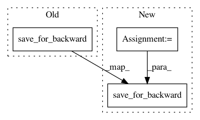

79a7f483ad20b0abbe26092827242a117a93fd48,mpc/lqr_step.py,LQRStep,forward,#LQRStep#Any#Any#Any#Any#Any#,91
Before Change
// @profile
def forward(self, x_init, C, c, F, f=None):
self.save_for_backward(x_init, C, c, F, f)
if self.no_op_forward:
return self.current_x, self.current_u
After Change
Ks, ks, self.back_out = self.lqr_backward(C, c_back, F, f_back)
new_x, new_u, self.for_out = self.lqr_forward(
x_init, C, c, F, f, Ks, ks)
self.save_for_backward(x_init, C, c, F, f, new_x, new_u)
return new_x, new_u
def backward(self, dl_dx, dl_du):
In pattern: SUPERPATTERN
Frequency: 3
Non-data size: 3
Instances
Project Name: locuslab/mpc.pytorch
Commit Name: 79a7f483ad20b0abbe26092827242a117a93fd48
Time: 2018-11-23
Author: bamos@cs.cmu.edu
File Name: mpc/lqr_step.py
Class Name: LQRStep
Method Name: forward
Project Name: cornellius-gp/gpytorch
Commit Name: 33e453db08f02c1f31f303fa75ca9c2983d65bcb
Time: 2018-08-01
Author: gardner.jake@gmail.com
File Name: gpytorch/functions/_root_decomposition.py
Class Name: RootDecomposition
Method Name: forward
Project Name: cornellius-gp/gpytorch
Commit Name: 22361f98c2c8683715a507f59a5884071d672826
Time: 2017-08-01
Author: jrg365@cornell.edu
File Name: gpytorch/math/functions/exact_gp_marginal_log_likelihood.py
Class Name: ExactGPMarginalLogLikelihood
Method Name: forward